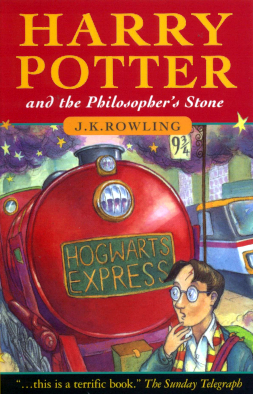
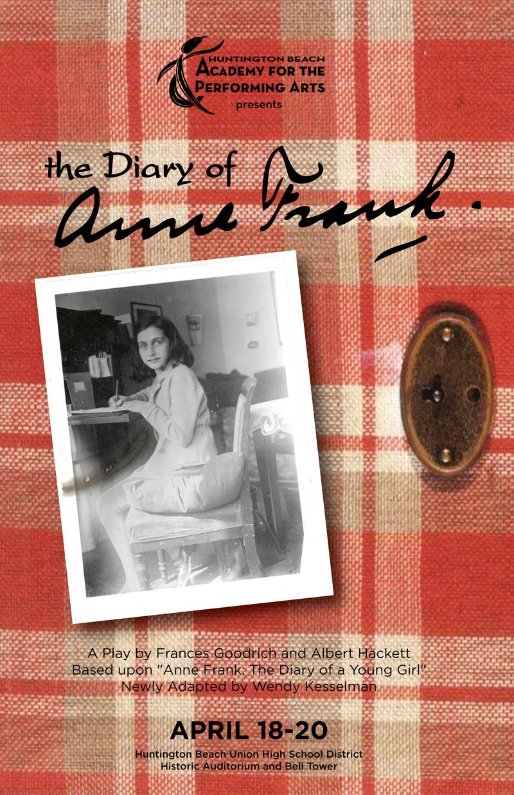

The greatest books are defined as classics for a reason. Written by the greatest literary minds of their time, they have universal themes, characters, experiences, emotions and perspectives that are still relevant today. Some of them are the very inspiration from which entire modern genres of literary fiction have sprung up from.
If you love reading, here’s a perfect reading list for you.
Everyone should read at least once for these 30 books — some are well known classics, others are modern giants. All are well worth reading at least once in your life!
1. A Thousand Splendid Suns
Khaled Hosseini
A Thousand Splendid Suns is a 2007 novel by Afghan-American author Khaled Hosseini, following his bestselling 2003 debut The Kite Runner. Mariam, an illegitimate teenager from Herat, is forced to marry a shoemaker from Kabul after a family tragedy. Laila, born a generation later, lives a relatively privileged life, but her life intersects with Mariam's when a similar tragedy forces her to accept a marriage proposal from Mariam's husband.
eBook
3. Harry Potter and the Philosopher's Stone
J. K. Rowling
Harry Potter and the Philosopher's Stone is a fantasy novel written by British author J. K. Rowling. The first novel in the Harry Potter series and Rowling's debut novel, it follows Harry Potter, a young wizard who discovers his magical heritage on his eleventh birthday, when he receives a letter of acceptance to Hogwarts School of Witchcraft and Wizardry. Harry makes close friends and a few enemies during his first year at the school, and with the help of his friends, he faces an attempted comeback by the dark wizard Lord Voldemort, who killed Harry's parents, but failed to kill Harry when he was just 15 months old.
eBook

4. The Diary of a Young Girl
Anne Frank

The Diary of a Young Girl, also known as The Diary of Anne Frank, is a book of the writings from the Dutch-language diary kept by Anne Frank while she was in hiding for two years with her family during the Nazi occupation of the Netherlands. The family was apprehended in 1944, and Anne Frank died of typhus in the Bergen-Belsen concentration camp in 1945. The diary was retrieved by Miep Gies, who gave it to Anne's father, Otto Frank, the family's only known survivor, just after the war was over. The diary has since been published in more than 70 languages.
eBook